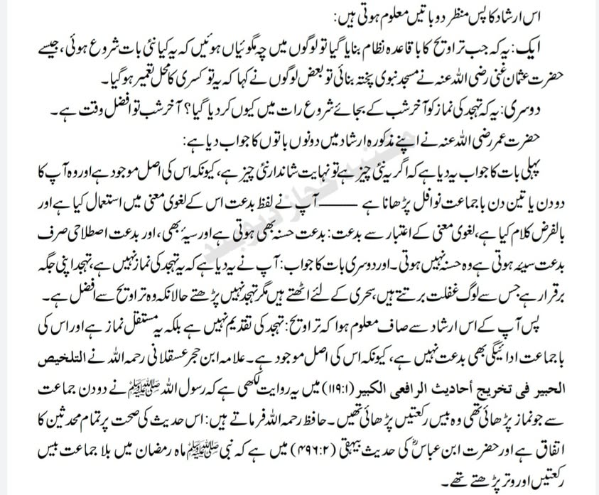
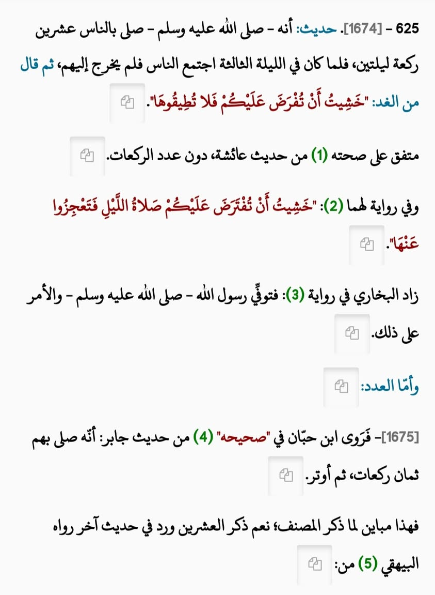

মত বাস্তবায়ন করতে তাহরিফ-বিকৃতি মোটেও কাম্য নয়
২০ এপ্রিল, ২০২০
মত বাস্তবায়ন করতে তাহরিফ-বিকৃতি মোটেও কাম্য নয়।
আমি এক যাগায় দাবি করেছিলাম যে, উমর রা-এর যামানায় ২০ রাকাত তারাবির সহীহ সনদ পাওয়া যায়- এটা ঠিক। কিন্তু রাসূল সা- থেকে ২০ রাকাত তারাবির হাদিস বিশুদ্ধ সনদে প্রমাণিত নয়। এ ব্যাপারে প্রায় সকল মুহাদ্দিসে কেরাম একমত। রেফারেন্স-
(ফাতহুল বারি-৪/২৯৯, ফাতহুল কাদির- ১/৪৬৭, উমদাতুল কারি-১১/১২৮, মাউসুয়াতুল ফেকহিয়া-২৭/১৪২-১৪৫)
তখন এক বিজ্ঞ আলেম বললেন- দেওবন্দের মুফতি সাঈদ পালনপুরী বলেছেন-
"হাফিজ ইবনু হাজার আসকালানি রাহ-, তার কিতাব তালখিসুল হাবিরের মধ্যে এ বর্ণনা উল্লেখ করেছেন যে, রাসূল সা. দুই দিন বা তিন দিন জামাতের সাথে যে নামাজ পড়িয়েছিলেন তা ছিল ২০ রাকাত(!) ইবনে হাজার রাহ. বলেন- এই হাদিসের বিশুদ্ধতার ব্যাপারে সকল মুহাদ্দিসে কেরাম ইত্তেফাক-ঐক্যমত(!)"
(তুহফাতুল আলমাঈ, শরহে তিরমিজি-৩/২৮৭)
তুহফাতুল আলমাঈ বের করে দেখলাম সত্যিই এ কথা বলেছেন সাঈদ পালনপুরী।
তখন আমি যেন আকাশ থেকে পড়লাম। ইবনে হাজারের মতো প্রাজ্ঞ, আহলে নকদ হাফিজুল হাদিস একই হাদিসের ব্যাপারে দুই কিতাবে দুই ধরণের হুকুম দেন কীভাবে?
রহস্য উন্মোচন হলো "তালখিসুল হাবির" বের করার পর। সেখানে ইবনে হাজার রাহ. হাদিস উল্লেখ করেন-
حديث: أنه - صلى الله عليه وسلم - صلى بالناس عشرين ركعة ليلتين، فلما كان في الليلة الثالثة اجتمع الناس فلم يخرج إليهم، ثم قال من الغد: "خشيت أن تفرض عليكم فلا تطيقوها".
এরপর তিনি স্পষ্ট বলেছেন-
متفق على صحته من حديث عائشة، دون عدد الركعات
অর্থাৎ দুই/তিন দিন তারাবি পড়ার বিষয়টি আয়েশা রা-এর হাদিসে বুখারী-মুসলিম দুজনই বিশুদ্ধতার উপর একমত। তবে রাকাতের (বিশ) সংখ্যাটির ব্যাপারে একমত নন।
(বুখারি-১১২৯, মুসলিম-৭৬১)
এরপর তিনি বলেন-
روى ابن حبان في "صحيحه من حديث جابر: أنه صلى بهم ثمان ركعات، ثم أوتر. فهذا مباين لما ذكر المصنف.
ইবনে হিব্বান তার সহীহ গ্রন্থে জাবির রা- সূত্রে বর্ণনা করেন যে, রাসূল সা. তাদের নিয়ে ৮ রাকাত তারাবি পড়েছিলেন। এরপর বিতর আদায় করেন।
(সহীহ ইবনে হিব্বান-২৪০৯)
সুতরাং তা মুসান্নিফের উল্লেখিত ২০ রাকাতের বিপরীত। (যার ফলে রাসূল সা-থেকে ২০ রাকাতের বর্ণনা দূর্বল বলে প্রমাণিত হয়।
(তালখিসুল হাবির-২/৮৮৭)
হুম এটা সঠিক যে উমর রা-এর আমলে ২০ রাকাত পড়া হয়েছিল বলে বিশুদ্ধ সূত্র রয়েছে।
(এগুলো আগের পোস্টে আলোচনা করেছি।)
কিন্তু রাসূল সা. ২০ রাকাত পড়েছেন বলে কোনো বিশুদ্ধ সূত্র নেই। তারপরও নিজের মত বাস্তবায়ন করতে এমন বিকৃতি ইলমের সাথে খেয়ানত নয় কি? ইমাম ইবনে হাজার আসকালানির নামে মিথ্যাচার নয় কি?
দুই কিতাবের স্ক্রিনশট দেখুন👇

